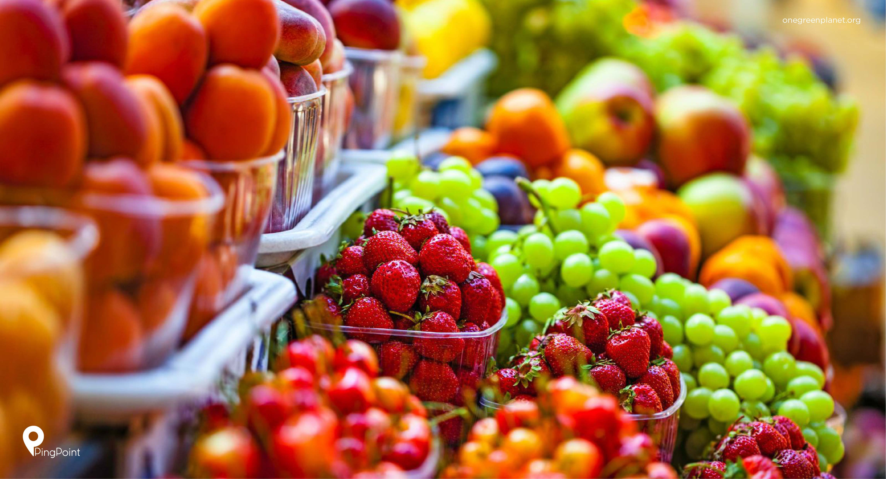
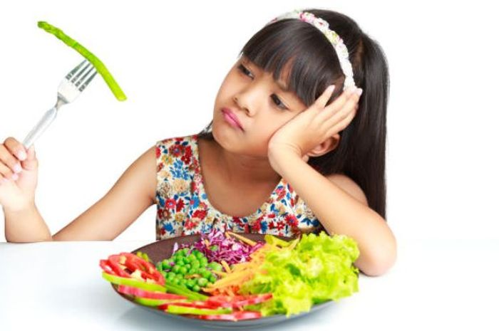

Berita Terkini

Konsumsi Buah Segar
Konsumsilah makan buah-buahan untuk kesehatan tubuh yang bisa mencegah dari berbagai penyakit berbahaya dan bisa mengatasi obesitas.

Dampak Negatif Kurang Makan Sayur
Pola makan memiliki peran penting pada seberapa baik fungsi tubuh berjalan. Apa yang anda konsumsi membentuk menyediakan nutrisi yang tidak dapat disimpan oleh tubuh.
Bersihkan Sayuran Hijau Agar Terbebas dari Ulat Sebelum Dimasak
Pada sayuran hijau terkadang sering ditemui ulat yang menyelip diantara sela-sela bagian sayur. Bagi sebagian orang kerap terganggu dengan adanya ulat di sayur ini. Jika ulat pada sayuran hijau ikut termasak kedalam olahanya membuat selera makan hilang.